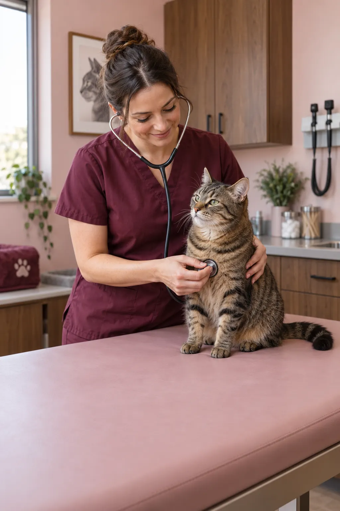

Kontakt
Jsme tu pro vás.
Adresa
U Lesa 1234, 100 00 Praha 10
Telefon
Otevírací doba
Po–Pá 8:00–19:00
So 9:00–14:00
Pohotovost: NONSTOP

Těšíme se na vás
První návštěva?
Vše důležité k objednání a přípravě najdete na jednom místě.
Praktické informace